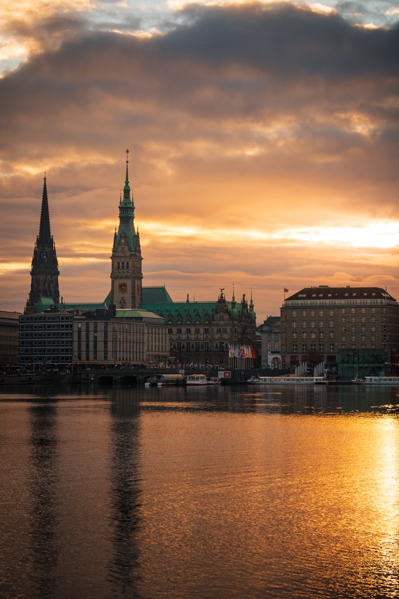

Home
Duitsland ligt in de westelijke helft van Centraal-
Europa, in het noorden grenzend aan de Oostzee,
de Noordzee en Denemarken, in het oosten aan Polen en
Tsjechië, in het zuiden aan Oostenrijk
en Zwitserland en in het westen aan Frankrijk,
Luxemburg, België en Nederland.
Oude beschrijvingen noemen Duitsland het land tussen de
zee en de Alpen.
Het land kan in drie belangrijke geografische gebieden
worden verdeeld:
de Duitse Laagvlakte in het noorden, de centrale Duitse
middengebergten, en in het zuiden, de Alpen.
Het klimaat is gematigd, al is er aanzienlijke
variatie. Bijna twee derde van de bossen van het land
bestaat
uit naaldbomen, de rest is hoofdzakelijk beukenbos.
Duitsland heeft tamelijk weinig bodemschatten.
De landbouwgrond is meestal erg vruchtbaar.
Op het Duitse grondgebied liggen 16 deelstaten,
in het Duits officieel Länder (enkelvoud Land, vaak in
de vorm Bundesländer) geheten.
Ze hebben vele bevoegdheden en ook medezeggenschap op
het federaal niveau.

Foto 1: hamburg tijdens de zonsondergang
De 19e eeuw zag de politieke eenwording van Duitsland, maar ook een groei van wetenschappelijke en culturele uitingen. Rond 1900 was Duitsland een van de meest vooraanstaande landen op die gebieden. Daarvan getuigden in de volgende jaren onder meer de vele Nobelprijzen voor Duitsers, bijvoorbeeld voor
Wilhelm Conrad Röntgen (natuurkunde, 1901), 
Emil von Behring (geneeskunde, 1901) en de historicus Theodor Mommsen (literatuur, 1902). Veel moderne uitvindingen hebben meer dan één uitvinder; belangrijk voor de ontwikkeling van de auto waren Carl Benz en Gottlieb Daimler, voor de tv Paul Nipkow en Karl Ferdinand Braun en voor de telefoon Philipp Reis. Op het gebied van de quantummechanica moet Werner Karl Heisenberg genoemd worden.